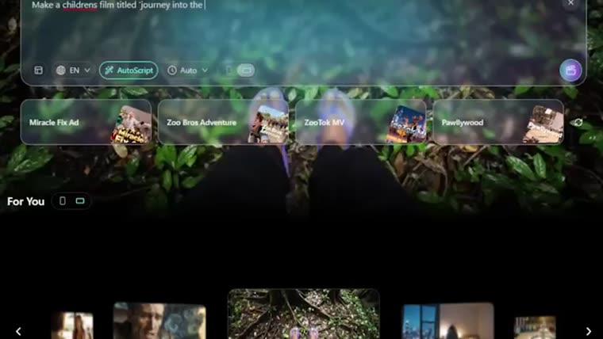
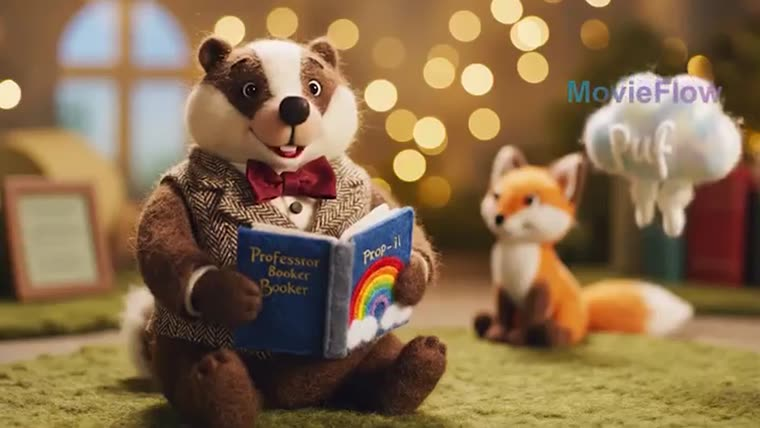
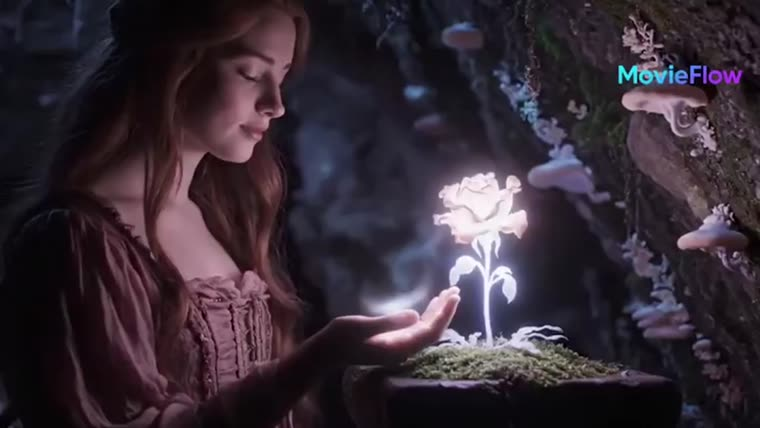

O MovieFlow junta 13 modelos de vídeo e imagem num lugar só. Este guia diz o que cada um faz bem, onde ele falha e qual escolher para a sua cena.
O MovieFlow (movieflow.ai) é um estúdio de filmes com IA: você escreve uma ideia e ele monta a história, os personagens, as cenas e o filme. Por trás dele há 13 modelos de outras empresas (Seedance, Kling, Veo, MiniMax, Vidu, Nano Banana, GPT Image e outros), e cada um é melhor numa coisa. Este projeto reúne, num guia e num arquivo de dados, o que cada modelo faz, os limites e quando usar. Para usar é só ler a página; quem quiser pode rodar o escolhedor no terminal com Python, sem instalar nada.
Em 2025 o MovieFlow era vendido como "filme grátis de até 10 minutos". Hoje ele cobra por créditos e virou um painel onde você escolhe o motor de cada cena.
Seedance 2.5, 2.0 e Fast, Kling 3.0 e 2.6, MiniMax H3, Vidu Q3 Pro, Veo 3 e o próprio MovieFlow 2.0 Ultra.
Nano Banana Pro e 2, GPT Image 2 e Seedream 5.0, para personagens, quadros-chave, cartazes e storyboard.
Uma linha "use quando" por modelo, os limites e as fontes. Onde as fontes não batem, a página avisa.
Toque numa necessidade: a resposta aparece aqui embaixo e os modelos indicados acendem nos cartões.
Dados de páginas públicas lidas em 06/11/2026. "diverge" = as fontes não batem; "não confirmado" = não achei fonte.
Use quando a cena precisa de um plano longo, com som e o mesmo personagem das referências.
Plano longo (até 30 s) com som e muitas referências.
Limites: resolução diverge entre fontes (720p a 1080p); duração automática pode dobrar o custo.
Use quando você quer testar a ideia ou o storyboard rápido antes de gastar num modelo caro.
O mais rápido e barato do site: 5 s de vídeo em 10 s, US$ 0,008 por segundo.
Limites: resolução, áudio e duração máxima não são publicados fora do site.
Use quando precisa de imagem bem nítida, personagem preso às referências ou corrigir um detalhe de um clipe pronto.
Vídeo 2K nativo, referências múltiplas e edição de um detalhe sem refazer o clipe.
Limites: duração máxima citada por uma fonte só.
Use quando a cena tem cortes (plano e contraplano, sequência de ação) e movimento forte, com fala sincronizada.
Multi-shot: 2 a 6 planos ligados numa geração, mesmo personagem.
Limites: resolução diverge (1080p a 4K); áudio em português não confirmado.
Use quando quer copiar o movimento ou o estilo de um vídeo de referência e manter o personagem em vários clipes.
Até 9 imagens + 3 vídeos + 3 áudios de referência, chamados no prompt (@Image1, @Video1).
Limites: resolução diverge (480p a 4K); áudio de referência até 15 s e com imagem ou vídeo junto.
Use quando é uma conversa entre dois ou mais personagens, ou o estilo é anime/animação.
Diálogo com vários falantes, cortes automáticos, bom em anime.
Limites: faixa de duração e resoluções divergem; português no áudio não confirmado.
Use quando precisa de um plano curto e realista com fala e som de ambiente (entrevista, comercial).
Realismo e física fortes, com fala e som de ambiente no mesmo passo.
Limites: clipe curto (8 s); o Google marca o Veo 3 como descontinuado na API em favor do 3.1.
Use quando quer testar várias versões da mesma cena antes de fazer a final no Seedance 2.0 ou 2.5.
Versão mais rápida e barata do Seedance 2.0.
Limites: teto de 720p; nem sempre sai mais barato, depende da tabela.
Use quando cena simples de 5 a 10 s, ou copiar uma coreografia ou gesto de referência gastando menos que o 3.0.
Motion Control: copia o movimento de um vídeo de referência.
Limites: clipes de 5 ou 10 s; sem multi-shot; voz só em chinês e inglês.
Use quando a imagem tem texto (cartaz, capa, placa) ou é o quadro-chave caprichado do personagem.
Texto legível na imagem e detalhe fino, até 4K.
Limites: mais lento que o Nano Banana 2.
Use quando precisa de muitas imagens de cena ou storyboard rápido.
Rápido e barato, qualidade perto do Pro.
Limites: um pouco atrás do Pro em texto e detalhe fino.
Use quando o quadro tem muito texto, é diagrama ou painel de HQ/storyboard em grade, ou é retocar uma imagem.
Texto denso, diagramas e painéis de HQ; edita sem perder o resto.
Limites: 4K ainda em beta; taxas de acerto de texto divergem entre fontes.
Use quando quer imagem 4K barata ou ajustar só uma parte de um quadro.
4K barato e edição por região (muda só um pedaço).
Limites: qual versão (Lite ou Pro) o MovieFlow usa não está publicado.
No celular, arraste a tabela para o lado para ver todas as colunas.
| Modelo | Fabricante | Duração máx. | Áudio | Destaque |
|---|---|---|---|---|
| Seedance 2.5 | ByteDance | 30 s | sim | plano longo (até 30 s) com som e muitas referências |
| MovieFlow 2.0 Ultra | MovieFlow | não confirmado | não confirmado | o mais rápido e barato do site: 5 s de vídeo em 10 s, US$ 0,008 por segundo |
| MiniMax H3 | MiniMax (Hailuo) | ~15 s (não confirmado) | sim | vídeo 2K nativo, referências múltiplas e edição de um detalhe sem refazer o clipe |
| Kling 3.0 | Kuaishou | 15 s | sim, com lip-sync | multi-shot: 2 a 6 planos ligados numa geração, mesmo personagem |
| Seedance 2.0 | ByteDance | 15 s | sim | até 9 imagens + 3 vídeos + 3 áudios de referência, chamados no prompt (@Image1, @Video1) |
| Vidu Q3 Pro | ShengShu | 16 s | sim | diálogo com vários falantes, cortes automáticos, bom em anime |
| Veo 3 | Google DeepMind | 8 s | sim, com lip-sync | realismo e física fortes, com fala e som de ambiente no mesmo passo |
| Seedance Fast | ByteDance | 15 s (provável) | sim | versão mais rápida e barata do Seedance 2.0 |
| Kling 2.6 | Kuaishou | 10 s | sim (chinês e inglês) | Motion Control: copia o movimento de um vídeo de referência |
O caminho que economiza créditos: rascunho barato primeiro, modelo caro só na cena que vale.


O jeito mais fácil é usar os botões de Qual usar nesta página, sem instalar nada. Para o escolhedor no terminal: Python 3 (no Windows o comando é python em vez de python3) e o git — ou baixe o ZIP no GitHub (botão Code → Download ZIP). Roda na sua máquina, sem conta e sem chave.
O repositório tem os dados dos 13 modelos (modelos.json) e o escolhedor (escolher.py).
git clone https://github.com/inematds/movieflow-modelos.git cd movieflow-modelos
Escreva a cena em poucas palavras. O escolhedor compara com as etiquetas de cada modelo e mostra os 3 melhores, com o "use quando" e os limites.
python3 escolher.py "conversa entre dois personagens em anime" # 1. Vidu Q3 Pro 2. Kling 3.0 3. Veo 3 python3 escolher.py "cartaz com texto do filme" # 1. Nano Banana Pro 2. GPT Image 2
A lista filtra por vídeo ou imagem; a ficha traz destaque, limites e as fontes.
python3 escolher.py --lista --tipo video python3 escolher.py --modelo kling-3.0
Crie a conta em movieflow.ai (vem com créditos de teste), faça o rascunho no modelo barato e refaça só as cenas importantes no modelo indicado. Personagem que aparece em várias cenas: crie a imagem dele primeiro e use como referência.
https://movieflow.ai # Agent V2 → ideia → idioma, duração, formato → Create
Modelos mudam rápido. Quando o MovieFlow trocar a lista, edite modelos.json e remonte a página.
python3 montar_guia.py # gera guia/index.html a partir do modelos.json
O que dá para afirmar hoje, e o que ainda não.
A conta nova ganha créditos para testar (100 créditos, segundo um diretório de preços de nov/2026). É teste, não uso ilimitado.
Preço anunciado no próprio site para o MovieFlow 2.0: 5 segundos de vídeo por cerca de 4 centavos de dólar.
US$ 19 por mês com 1.800 créditos, download 1080p sem marca-d'água (diretório Kingy, nov/2026). Os créditos zeram a cada 31 dias.
O custo em créditos de cada modelo só aparece com a conta aberta, e a tabela de planos do site carrega por JavaScript. Confira em movieflow.ai/pricing antes de assinar.
Cenas geradas na plataforma: cinema, terror, animação de feltro.

O que falta medir.